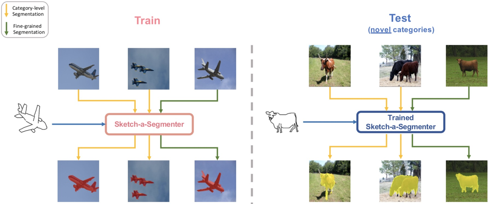
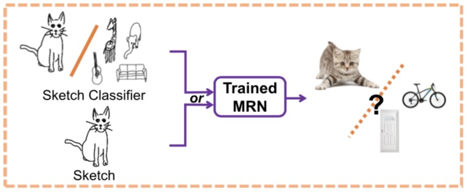
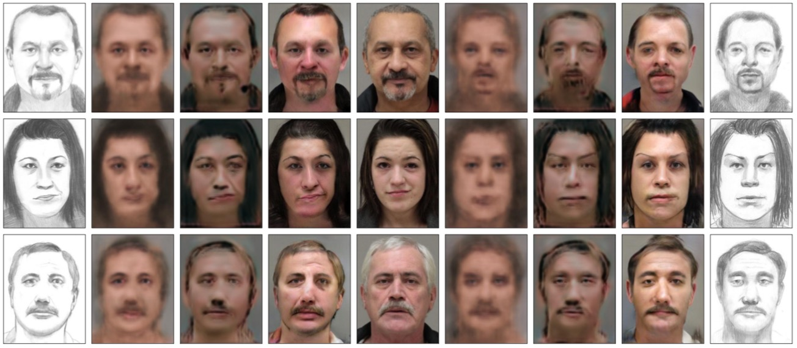

Ph.D. (Candidate)
SketchX Research LabI am currently a Ph.D. student of the SketchX Research Lab in Center for Vision, Speech and Signal Processing at University of Surrey, jointly supervised by Dr. Yi-Zhe Song and Dr. Yongxin Yang. And I also collaborate closely with Dr. Timothy Hospedales from the University of Edinburgh.
My research interests include Computer Vision and Deep Learning, particularly in Sketch and its novel applications.
|
University of Surrey (UoS) Ph.D. (candidate) in Computer Science *Transfer from QMUL to UoS with supervisors |
Apr. 2019 - Present |
|
Queen Mary University of London (QMUL) Ph.D. (candidate) in Computer Science |
Sept. 2016 - Mar. 2019 |
|
Beijing University of Posts and Telecommunications (BUPT) B.Sc in Telecommunications Engineering with Management |
Sept. 2012 - Jun. 2016 |
|  |
Conghui Hu, Da Li, Yongxin Yang, Timothy M. Hospedales and Yi-Zhe Song submitted to IEEE Transaction on Image Processing (TIP), 2020 |
|  |
Conghui Hu, Da Li, Yi-Zhe Song, Tao Xiang and Timothy M. Hospedales IEEE Conference on Computer Vision and Pattern Recognition (CVPR), 2018 (Spotlight) [PDF] |
|  |
Conghui Hu, Da Li, Yi-Zhe Song, and Timothy M. Hospedales British Machine Vision Conference (BMVC), 2017 (Oral) [PDF] |